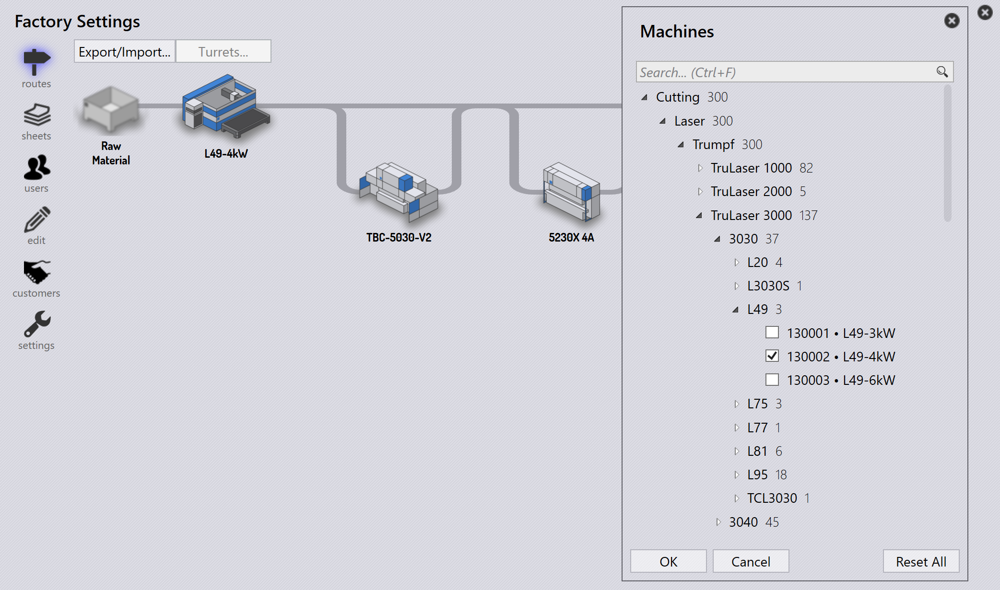

머신 추가/제거
Edit 명령을 사용하여 Machine selection 대화 상자를 시작합니다. 현재 선택 항목과 함께 모든 Cutting, Bending 머신의 계층적 목록을 표시합니다.

-
계층적 트리 보기에서 단순화된 머신 이름이 머신 레이블로 표시되고 전체 이름이 툴팁에 표시됩니다. 폴더 툴팁에는 경로가 표시됩니다.
-
검색 상자를 사용하여 Name, Full-name, Brand 등으로 머신을 검색할 수 있습니다. 검색 중에 머신 선택이 유지되므로 동시에 선택하고 검색할 수 있습니다.
-
검색은 머신 기술, 크기로 검색하는 데에도 사용할 수 있습니다. 따라서 검색 상자에 'fold' 를 입력하면 모든 folding(panel bender) 머신이 표시됩니다. 마찬가지로 10ft 를 입력하면 10ft 테이블 길이를 가진 모든 프레스 브레이크가 표시됩니다(이는 단위를 구분합니다. 미터법 단위에서는 미터에 m 을 사용하십시오). 이름에서 사용할 수 있는 경우 축 수도 검색에 사용할 수 있습니다(예: 2A, 5A 등).
-
Reset All 명령은 머신 선택을 데모 구성으로 재설정합니다.